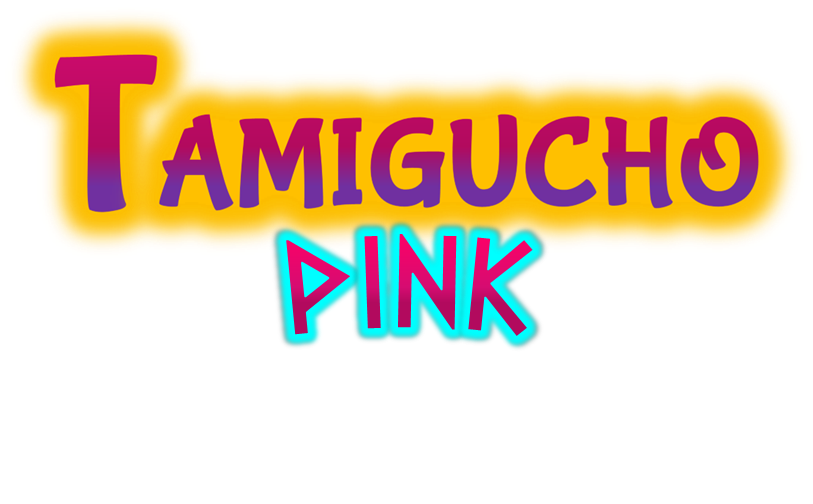

Tamigucho Pink & Dark - Soon
 
- Region: Kairo (Greece-based)
- 5 gimmicks: Super morph, X attacks, Ultratype, Kyusion and Timeform
- Creatures amount: 250 catchable tamiguchos and 300 total depicted - see the TamiPedia for a glimpse
- Platforms: GB, GBA (through Raspberry Pi cartridges), Phone (Android/iOS/KaiOS), PC (Linux/MacOS/Windows), PS4/5, Xbox One/Series, Switch (by porting HTML5 to Native using Ratalaika Games' service)
- **not a hack-rom** Engine: Construct 2/3
Early concept featuring pokémons - rather than tamiguchos - to demo the games' vibes, while their respecting legendaries aren't available yet:


Femantis (respecting legendary of the Pink version) and GBA cartridges concept design:

 Go to the main Tamigucho site
Go to the main Tamigucho site